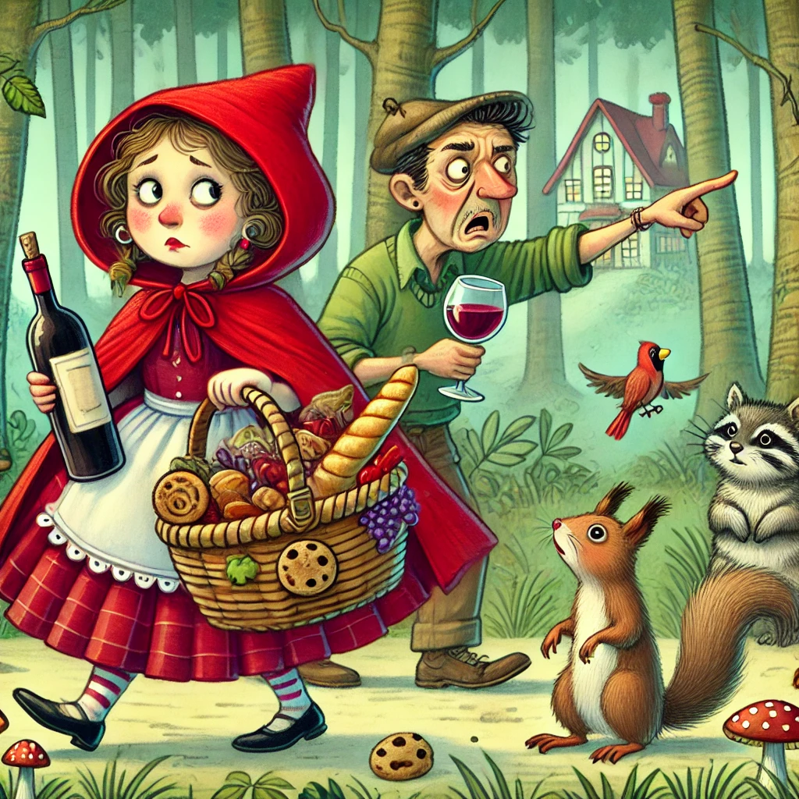
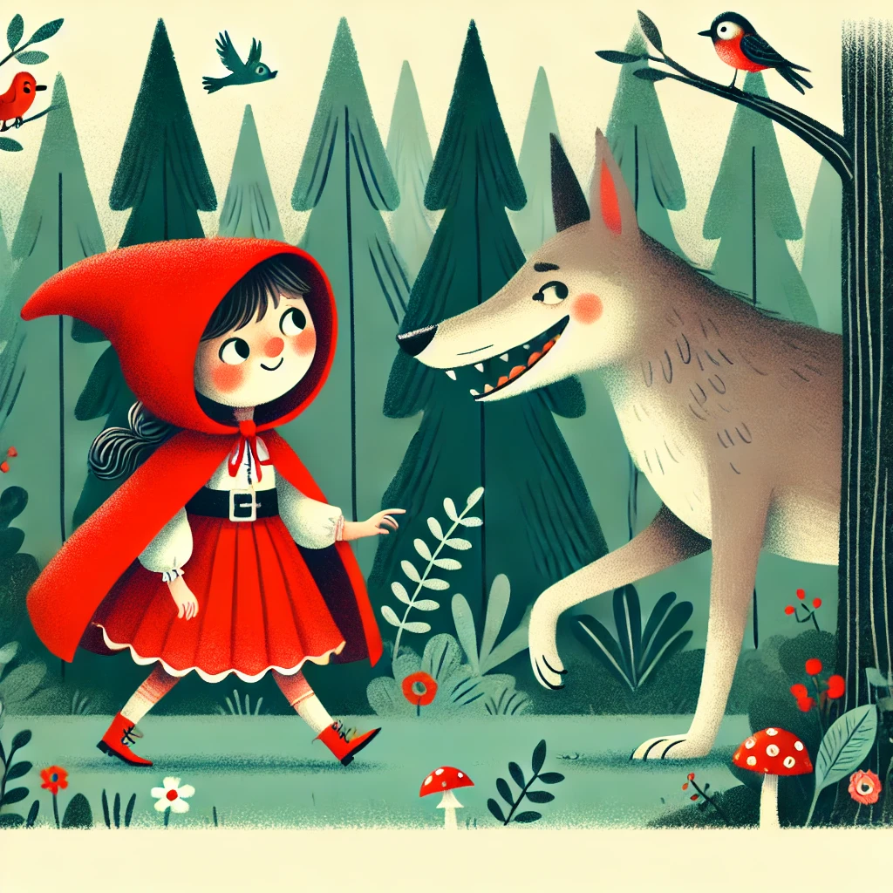

Había una vez una dulce niña. Todo el mundo la quería. Sobre todo su abuela. Así que un día le regaló un sombrero de terciopelo rojo. La niña siempre llevaba el sombrero y desde entonces la llamaban Caperucita Roja.

Un día su abuela estaba enferma. Así que Caperucita Roja fue a llevarle vino y galletas. Seguro que así se sentiría mejor. Su madre le dijo que no se saliera del camino y que tuviera cuidado. También tenía que ser educada y despedirse de la abuela.
Caperucita Roja prometió hacerlo y siguió su camino. La abuela vivía en lo más profundo del bosque, a más de media hora de camino del pueblo. En el bosque, Caperucita Roja se encontró con un lobo. Ella no sabía que era peligroso. Así que no tuvo ningún miedo.
